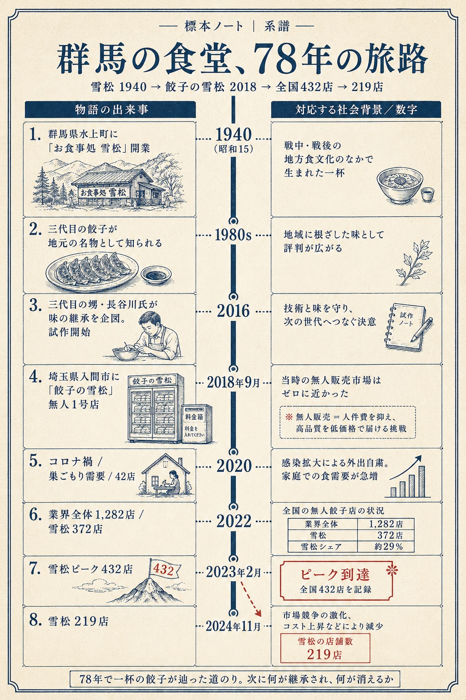
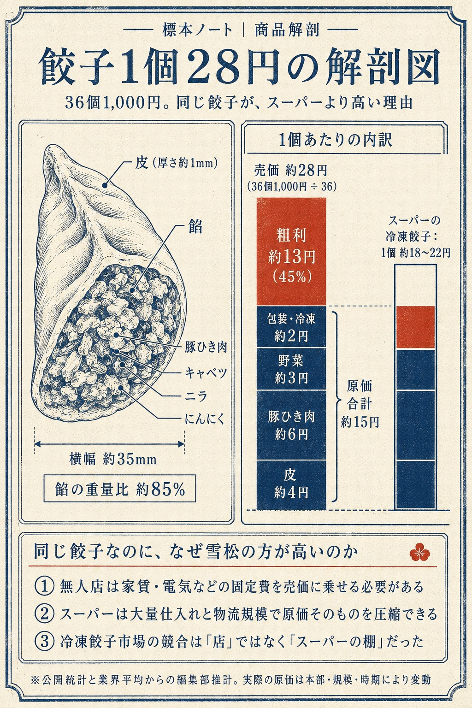
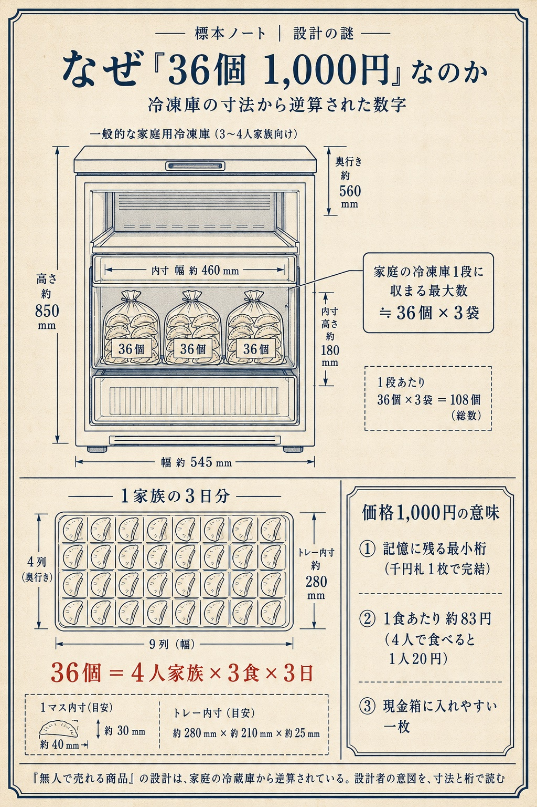

この図鑑について ── 公的統計（帝国データバンク等）に基づく分析と、編集部による推計で構成しています。金額・利益率・損益分岐は参考値であり、特定事業者の経営実態を示すものではありません。店内に人の声は登場しません。数字で記録する図鑑です。
▶ 新しい標本（次号）の通知は note のフォローで ／「一坪ビジネス原価ブック（PDF）」無料配布 準備中
ある日とつぜん街角に現れて、ある日しずかに消えていった。
3年で10倍、全国1,400店。
冷凍庫ひとつと防犯カメラだけで成り立つこの業態は、コロナ禍の巣ごもりとともに増殖し、ピークを越えると同じ速度で店を畳んでいった。これは「無人で売る」という発明が、なぜ広がり、なぜ続かなかったかの記録である。
§1
標本データ（スペック）
1号店は2018年9月、埼玉県に開いた餃子の雪松だった。36個1,000円という単価は、市販の冷凍餃子より高い。初期費用の目安は350万円前後で、標準的な飲食店の約10分の1。無人であることが、この業態を成立させる設計の中心にある。
高めの単価、薄い初期投資、人件費ゼロが三位一体。
※ 初期投資・固定費は本部・立地により変動。営業利益率・損益分岐は業界報道／FC公開シミュレーションに基づく目安値。
§2
栄枯盛衰の時間軸
2020年末に131店舗だった無人餃子直売所は、2022年末に1,282店舗へ増えた（帝国データバンク）。最大手・餃子の雪松は、2023年2月に432店舗でピークを迎え、2024年11月には219店舗になった。数字が語るのは急成長ではなく、急成長と急縮小が同居する業態の輪郭だ。
ピークから約18ヶ月で、店舗数は半減した。
創業の食堂から閉店ラッシュまで ── 6年の軌跡
群馬の食堂（創業1940年）の味を継いだ「餃子の雪松」が2018年に無人1号店を開業。コロナ禍で点火し、低投資ゆえ供給が急増、需要が一巡すると同じ速度で縮んだ ── 典型的なブーム型業態の曲線。
出典：帝国データバンク／餃子の雪松 公式・各種報道（2024）
標本ノート ｜ 系譜

群馬の食堂（1940）から無人1号店（2018）、そして432→219店へ。78年の系譜を1枚で。
§3
店舗数の推移（実数）
雪松の店舗数を並べると、上りは急で、下りは長い。42（2020年7月）→ 372（2022年4月）→ 432（2023年2月）→ 374（2024年6月）→ 219（2024年11月）。折れ線にすると、ピークの山は鋭く、裾は緩やかに引く。飽和は個店ではなく、業態ごと進む。
山の登りは急で、下りはゆっくり続く。
全国の無人餃子店と、最大手「餃子の雪松」
全国の無人餃子店は2020年末131店 → 2022年末1,282店へ約10倍に膨張（ピーク約1,400店）。最大手・雪松（シェア約3割）は432店をピークに、2024年は219店へほぼ半減した。
出典：帝国データバンク（全国店舗数）／報道各社（雪松 2020.7=42→2024.11=219）
§4
なぜ「無人」で成立したのか
この業態を支えた条件は四つ。低投資（通常飲食の約1/10）、人件費ゼロ、コロナ禍の巣ごもり需要、非接触への要請。四つが同時に揃ったのは、2020年から2022年という限られた時間だった。追い風は業態固有の強みではなく、環境の組み合わせだった。
成立条件は「構造」ではなく「環境の重なり」だった。
4つの追い風が同時に吹いた
低投資・無人・巣ごもり・非接触。成立を支えた4条件は、そのまま「誰でも真似できる」＝参入障壁の低さでもあった。追い風が止んだとき、堀のなさが露わになる。
出典：帝国データバンク調査・各種報道をもとに編集部が構造化
🔒 ここから先は プレミアム図鑑
※これはフリーミアム設計のデモ表示です。 通常はこの線から下（損益の中身・撤退要因・立地戦略）を有料に閉じます。「概要は無料で見せ、儲けの構造と失敗の理由で課金する」── 収益エンジンの実物見本として、今回は全文を表示しています。
▶ 損益分岐の精密版・立地スコアシートは続きで。次号通知は note フォローで／「原価ブックPDF」無料配布 準備中
§5
1店舗のコスト構造
月商150万円のモデルで分解すると、商品原価が約55%、人件費は無人ゆえ理論上ゼロ、家賃・光熱・通信・廃棄などの固定費が月22万円ほど（推定）。残る営業利益は約45万円で、利益率は約30%という実績値とほぼ重なる。利益のかたちは、原価率の高さで決まる。
利益率30%は「人を雇わない」が前提の数字。
月商150万円のモデル：利益はどこへ消えるか
無人ゆえ人件費は乗らないが、利益の最大の敵は原価率の高さ。冷凍餃子は市販品より単価が高く、物価高はこの原価を直接押し上げる。
営業利益率 約30% は報道・FC公開値。内訳は編集部のモデル推計（立地・本部で変動）。
標本ノート ｜ 商品解剖

餃子1個28円の内訳 ── 原価15円・粗利13円。同じ餃子が、スーパーより高い理由。
§6
損益分岐点
損益分岐点は月商90万円、1日あたり約30セット（推定）。これを割り続けた店が地図から消えた。30セットは客数ではなく購買回数で、近隣の住民が繰り返し買うことが前提になる。生命線は集客力ではなく、反復購買だった。
1日30セットを割った日が、閉店の始まりだった。
明暗を分けるのは「1日30セット」の壁
固定費が軽い無人モデルでも、分岐点はおよそ1日30セット（月商90万円）。1日10セットでは人件費ゼロでも赤字、50セットなら月27万の利益。「無人＝楽に儲かる」ではなく「立地で全部決まる」業態である。
損益分岐の月商目安はFC公開シミュレーション。費用線は §5 モデルに基づく編集部推計。
標本ノート ｜ 設計の謎

なぜ「36個1,000円」か。家庭の冷凍庫と「4人×3食×3日」から逆算された数字。
§7
リスク・プロファイル
リスクを6軸で並べると、過当競争・価格競争・需要消失・万引き・原材料高騰・立地依存が浮かぶ。なかでも万引きは、無人という設計の弱点が直接出る。25回の被害、推定12.5万円超で閉店した事例が記録されている。リスクの所在は商品ではなく、運営方式そのものにある。
無人の利点が、そのまま無人のリスクになった。
この業態の「弱点」を6軸で可視化（5＝高リスク）
無人ゆえの万引き、誰でも真似できる堀の低さ、過当競争が突出。ある店舗では25回・被害12.5万円超の盗難の末に閉店した例も報じられた。
出典：各種報道（盗難被害事例）／帝国データバンク調査をもとに編集部評価
§8
なぜ街から消えたのか ── 撤退の5大要因
撤退の要因として確認できるのは五つ。市場の飽和、スーパーの安い冷凍餃子への価格負け、目新しさの消失、万引き被害の累積、原材料・物価高。いずれも「無人である」ことを前提にした弱点へ収束する。2024年の飲食店倒産は894件で過去最多（帝国データバンク）、その文脈の中にこの業態もある。
スーパーに価格で負けた。無人が防げない理由で。
「盗まれる」より重かった、構造的な要因
報じられがちな「万引き」は要因のひとつに過ぎない。本質は参入が容易すぎて供給過多になったこと、スーパーの安い冷凍餃子に価格で勝てなかったこと。ブーム業態が辿る教科書的な末路である。
出典：帝国データバンク調査・ITmedia・マネー現代ほか各種報道（2024）
§9
立地適性マップ
向いている立地は、住宅密集地・幹線道路沿い・駐車場のある場所。逆に避けたいのは、通行量は多くても素通りされる駅前や商業施設内だ。冷凍＝持ち帰って家で焼く業態なので、来店動機は住居の近さにある。無人が求める立地は、有人店舗とは別の論理で決まる。
正解は「人が来る場所」より「戻ってくる場所」。
冷凍＝「持ち帰って家で焼く」業態。住居の近さ＝来店動機。通行量より生活導線で選ぶのが鉄則。
§10
メリット / デメリット
強みは、低投資・無人・高利益率・回収の早さ。弱みは、差別化の乏しさ・万引き・反復購買への依存・競合参入の容易さ。好調例では回収約8ヶ月の記録もある。だが同じ仕組みで参入する競合が増えるほど、その数字は成立しにくくなる。強みと弱みは、同じ設計から生まれている。
回収8ヶ月の好条件と、飽和の加速は同根にある。
メリット
- 初期投資が通常飲食の約1/10、人件費ほぼゼロ
- 無人＝副業・多店舗展開がしやすい
- 調理スキル不要（本部の冷凍品を置くだけ）
- 好立地・好調なら投資回収 約8ヶ月の例も
デメリット
- 万引き・盗難が構造的に防ぎきれない
- 参入容易＝堀がなく、過当競争に陥りやすい
- 原価率が高く、物価高に弱い
- スーパー冷凍餃子という強力な代替がある
- ブーム依存で賞味期限が短い
§
標本所見
無人餃子直売所は、ある条件の下でだけ成立した業態だった。条件が重なった3年で急増し、条件が変わると縮んでいる。標本として見れば、これは失敗でも成功でもない。「ある時代に存在した商いの形」だ。次に街角で冷凍庫を見かけたら、その店が今どの位置にいるかを、数字で確かめられる。
開業も閉店も、同じ物差しの上にある。
この図鑑を、続けて受け取る
次号「セルフ写真館 No.002（製作中）」の通知は、noteのフォローで届きます。
「一坪ビジネス原価ブック（PDF）」の無料配布は、メール便の準備が整い次第はじめます。
煽りません。街角の商いを、数字で記録します。
note でフォローして受け取る
このシリーズについて
街角の極小ビジネスを、共通フォーマット（標本データ・栄枯盛衰・コスト構造・損益分岐・リスク・立地）で解剖する図鑑です。「消えゆくもの」と「生まれるもの」を同じ物差しで記録します。
No.002
セルフ写真館
無人セルフ系・拡大中の次の標本
主な出典
・帝国データバンク「餃子無人販売店」動向調査（全国約1,400店／2022年末1,282店／3年で約10倍）
・帝国データバンク「飲食店」倒産動向調査 2024（飲食倒産894件・過去最多）
・餃子の雪松 公式（1号店2018年9月・36個1,000円）／店舗数推移は各種報道（2020.7=42, 2022.4=372, 2023.2=432, 2024.6=374, 2024.11=219）
・無人餃子FCの初期費用・損益分岐・利益率：各FC公開情報／開業支援メディア
・盗難被害事例：FNN／関西テレビ ほか報道（2024）
※ 本図鑑の金額・利益率・損益分岐は、公開統計・報道・FC公開資料をもとにした参考値および編集部のモデル推計です。実際の数値は立地・規模・運営方針・時期により大きく異なります。特定事業者の経営実態を示すものではありません。
一坪ビジネス図鑑 ／ No.001 ／ 無人餃子直売所